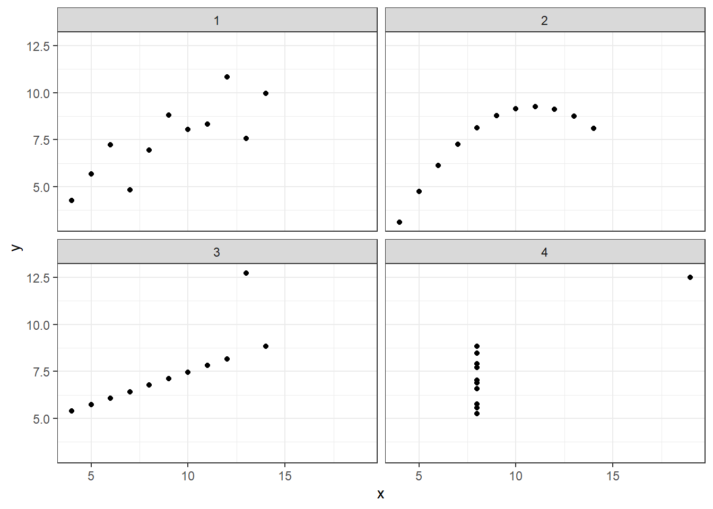

13 Pleas for visualization
The R code for the following sections is also available as plain .R scripts. If you downloaded the ZIP-file and you view this as a PDF-document, you find the .R files in the same folder as this document.
13.1 Numbers tell only a part of the story
To illustrate why data visualization is useful, let’s look at two examples. Below we read some data from a CSV-file.
some_data <- read_csv("data/some_data.csv")
#> # A tibble: 142 x 2
#> x y
#> <dbl> <dbl>
#> 1 55.4 97.2
#> 2 51.5 96.0
#> 3 46.2 94.5
#> ...As you can see, the data contains two variables x and y with 142.
If we didn’t have visualization as a tool in our data analytics toolkit, we could try to get some insight into the data with descriptive statistics. For example, we could calculate the mean for both variables:
some_data %>%
summarise(across(everything(), mean, .names = "{.col}_mean"))# A tibble: 1 x 2
x_mean y_mean
<dbl> <dbl>
1 54.3 47.8Similarly, we could calculate a measure of spread, such as the standard deviation:
some_data %>%
summarise(across(everything(), sd, .names = "{.col}_sd"))# A tibble: 1 x 2
x_sd y_sd
<dbl> <dbl>
1 16.8 26.9Or other measures:
some_data %>%
summarise(
across(everything(),
list(mean = mean, sd = sd, median = median),
.names = "{.col}_{.fn}"
)
)# A tibble: 1 x 6
x_mean x_sd x_median y_mean y_sd y_median
<dbl> <dbl> <dbl> <dbl> <dbl> <dbl>
1 54.3 16.8 53.3 47.8 26.9 46.0We could also calculate Pearson’s correlation coefficient:
tibble(
pearson = cor(some_data$x, some_data$y)
)# A tibble: 1 x 1
pearson
<dbl>
1 -0.0645From the rather small value, we could hypothesize that the variables are unrelated. But are they?

13.3 Anscombe’s Quartet
Another and even older plea for the visualization of data can be found in Francis Anscombe’s publication Graphs in Statistical Analysis from the year 1973. In his paper, Anscombe presents four data sets that look very much the same when viewing the common descriptive statistical measures. Again, only by visualizing the data can we see the otherwise hidden patterns.
Let’s load the data and see for ourselves:
anscombe1 <- read_csv("data/anscombe1.csv") %>%
mutate(dataset = "1")
anscombe2 <- read_csv("data/anscombe2.csv") %>%
mutate(dataset = "2")
anscombe3 <- read_csv("data/anscombe3.csv") %>%
mutate(dataset = "3")
anscombe4 <- read_csv("data/anscombe4.csv") %>%
mutate(dataset = "4")For convenience, we want all four of Anscombe’s data sets in one data frame. We can achieve this with the union_all() function:
anscombe <-
anscombe1 %>%
union_all(anscombe2) %>%
union_all(anscombe3) %>%
union_all(anscombe4)
#> # A tibble: 44 x 3
#> x y dataset
#> <dbl> <dbl> <chr>
#> 1 10 8.04 1
#> 2 8 6.95 1
#> 3 13 7.58 1
#> ...We now have all four of Anscombe’s Quartet in one data frame and we can distinguish the original data set by the column dataset. First, let’s look at the descriptive statistics:
anscombe %>%
group_by(dataset) %>%
summarize(
mean_x = mean(x),
mean_y = mean(y),
std_dev_x = sd(x),
std_dev_y = sd(y),
corr_x_y = cor(x, y)
)# A tibble: 4 x 6
dataset mean_x mean_y std_dev_x std_dev_y corr_x_y
<chr> <dbl> <dbl> <dbl> <dbl> <dbl>
1 1 9 7.50 3.32 2.03 0.816
2 2 9 7.50 3.32 2.03 0.816
3 3 9 7.5 3.32 2.03 0.816
4 4 9 7.50 3.32 2.03 0.817As expected, all measures look the same for all 4 data sets. But again, a plot reveals the truth:
anscombe %>%
ggplot() +
aes(x, y) +
geom_point() +
theme_bw() +
theme(legend.position = "none") +
facet_wrap(~dataset, ncol = 2)
The first plot shows a linear trend with some noise, as we might already have suspected from a correlation coefficient of roughly 0.81. The second plot, although having the same correlation coefficient, displays a non-linear trajectory. The third plot would have had a perfect correlation if it wasn’t for the single outlier. In contrast, the last plot would have had no correlation between x and y, if the point on the very top-right didn’t exist. Again, we could not have gotten this insight from any statistical measure we can calculate.
I hope the examples convinced you of the importance of data visualization. There are even more good reasons why we should visualize data, besides revealing hidden patterns. We know from psychological research about the way humans process information that visualizations are a much faster way into our brains. We can not only grasp what we see in a good data visualization faster, but also comprehend it better and create a better memory of it. If that doesn’t convince you, nothing will.